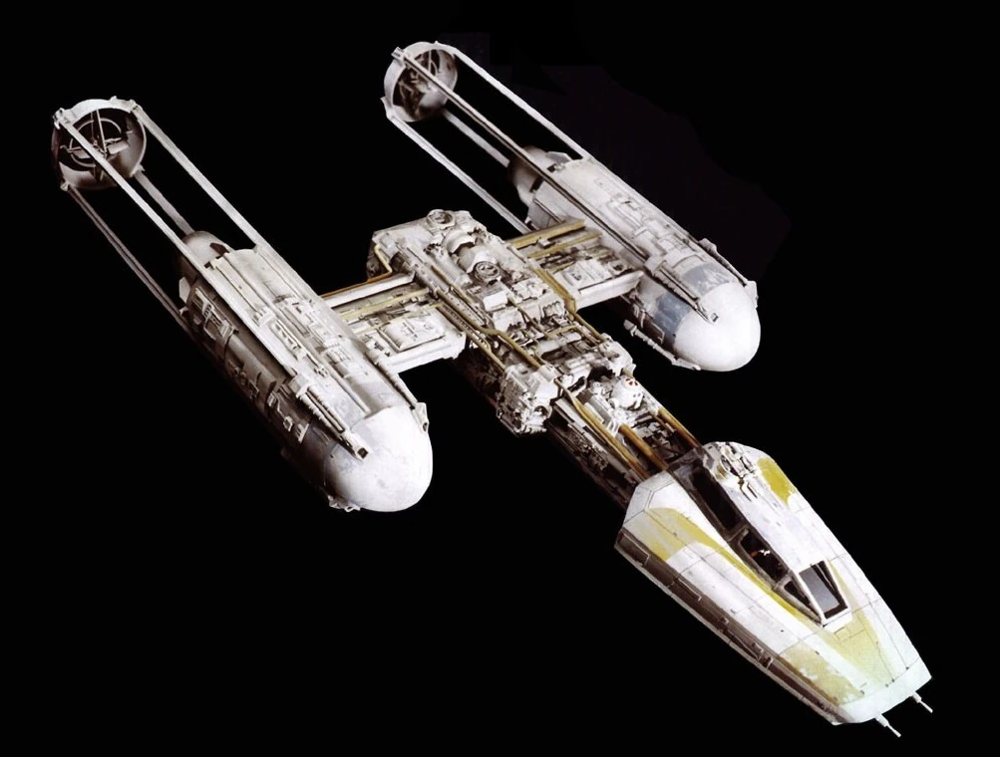

Rebel Arms Dealer
As the galaxy's premier arms dealer for the Rebel Alliance, Galactic Guerrilla Gear™ is the linchpin in our collective endeavor to overthrow the Empire's oppressive regime. Our work is dedicated to arming our brave fighters with the most advanced and effective weaponry available. We specialize in sourcing and supplying the legendary X-Wings, the backbone of our fleet, known for their agility and firepower. In the shadows of space, we negotiate and secure deals that bring hope to our cause. Our network spans across star systems, ensuring that no matter where the fight takes us, we are prepared. We are not just a supplier; We are believers in the cause, strategists ensuring that every rebel pilot has the best chance of victory. Our discretion is absolute, our commitment unwavering. When you choose to equip your forces through Galactic Guerrilla Gear™, you're not just buying arms; you're investing in the future of freedom across the galaxy. Let's join forces to bring light to the darkened corners of the galaxy. Together, we will prevail. Continue reading to find out what we offer!Ships
X-Wings
Due to their proven combat effectiveness and versatility, the X-Wing starfighter is renowned for its superior firepower, with four laser cannons and proton torpedo launchers, making it a formidable opponent against the Empire’s TIE fighters. Its reinforced titanium-alloy hull and high-powered shield generators provide unmatched durability and defense capabilities. Additionally, the X-Wing’s hyperdrive allows for rapid deployment across star systems, a critical advantage for the hit-and-run tactics favored by the Rebellion. With the ability to perform in both space and atmospheric conditions, along with an astromech copilot for in-flight repairs and navigation, the X-Wing is a strategic asset that can turn the tide in the ongoing struggle against the Empire. By investing in these starfighters, the Rebel Alliance can bolster their fleet with a ship that has a storied history of success in battle, from the Battle of Yavin to the Battle of Endor. Watch the following video to see how effective they can be at turning the tide of a battle:
Y-Wings
 The Y-Wing, a stalwart of the Rebel fleet, is a versatile fighter-bomber known for its durability and firepower. With a robust frame capable of withstanding heavy fire, it’s equipped with laser and ion cannons, plus proton torpedoes, making it ideal for bombing runs and capital ship engagements. Its history of service from the Clone Wars to the Galactic Civil War underscores its reliability, and while it may lack the speed of an X-Wing, its resilience and offensive capabilities make it a valuable asset in any battle.
Weapons
Blasters
Each of our blasters are engineered for precision and power, offering unparalleled performance in the heat of battle. The A280 blaster rifle, a favorite among Rebel commandos, delivers exceptional armor-piercing capabilities and long-range accuracy, ensuring you can take on the Empire’s forces with confidence. Its modular design, including the A280-CFE covert field edition, adapts to any mission, transforming from a core pistol to an assault rifle or sniper rifle, giving you the tactical edge you need to succeed. Embrace the legacy of the Rebellion and make every shot count with a blaster that’s as reliable as it is deadly.
Thermal Detonators
Unleash the power of controlled chaos with our thermal detonators, the ultimate equalizer in the Rebel Alliance’s arsenal. Compact and easy to carry, these devices pack a devastating punch, capable of clearing rooms or dismantling vehicles with a well-placed throw. Ideal for disrupting enemy formations or creating an opening for an assault, thermal detonators are the go-to choice for soldiers needing a quick and effective solution to a variety of combat scenarios. Whether you’re engaging in guerrilla tactics or holding the line, these detonators provide the explosive edge needed to ensure your mission’s success
How To Make A Purchase
This is just a small sampling of what we offer here at Galactic Guerrilla Gear™. Please contact us directly to find out all of the other amazing items we have to offer. To make a purchase, please use one of the following contact methods:
-
Holographic Transmission
- Send encrypted hyperspace communication to Hondo Ohnaka with your Holo-address
- Wait for Galactic Guerrilla Gear™ to process your request
- Taraan Voss will send you an encrypted message informing you of the time of the meeting
-
Private Comlink
- Send encrypted message to Krex Faltos requesting a private comlink
- A comlink will be sent to you within the next 7 business days. 5 credit delivery fee
-
Automated Droid Assitants
- Send a droid with the message to Vexa Korr
- Your droid will have its memory wiped (27 credit overhead fee) and then returned to you with our response
If you have any questions or issues, please do not hesitate in reaching out to us! May the force be with you as you work hard to acheive glactic peace and freedom!
Free Data
Bonus! As a demonstration of goodwill, here is an interactive list of all registered ships that you can purchase from us, or that you may face in your endeavours to bring down the empire. Galactic Guerrilla Gear™ does not hold itself liable to any discrepencies in the data provided and does not guarantee that it sells all of these different ships.